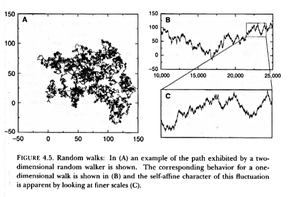

Fractals in time - Day 2
Characteristic features of fractals
-
Mandelbrot Originally defined fractals as sets that have fractal dimension strictly greater than its topological dimension.
-
There is no hard and fast definition but a list of properties.
-
We refer to F as fractal if:
-
F has a fine structure: i.e. detail on small scales.
-
F is too irregular to be described by traditional geometrical language
-
F has some form of self-similarity, perhaps approximate or statistical
-
Usually the fractal dimension of F is greater than its topological dimension
-
Random walks
-
Random walk (RW) is a stochastic process in which an object moves in a space by performing random jumps

-
We can see that the enlarged view of a small part of the trajectory looks similar to the original, is fractal.
-
The pattern displayed by the one dimensional RW is not self-similar but self-affine because the time and space dimensions do not scale in the same way
{kind=link}
Fractal time series
-
Fractal properties in time series can be analyzed by means of Hurst’s Rescaled Range Analysis
Let us consider a time series that can be: the number of extinctions of a group of organism or a particular population or the discharge of a river, etc.
$X_i$ with $i=1,2,3,…,T$
The average of $X_i$ over $T$ time steps will be $< X >_T = \left( \sum_{i} X_t \right)/T$
The departure from the average over a t-year time horizont is given by:
$$X(t,T) = \sum_{i=1}^{t} [X_i - < X >_T ] = \left( \sum_{i=1}^{T} X_i \right) - t < X >_T$$
$X(t,T)$ is usually calculated dividing the time series in $M$ segments of size $T$.
-
What is the value of $X(T,T)$ ?
Rescaled Range Analysis
-
We need to calculate two more quantities from the previous :
The standard deviation $S(T) = \left( (< X_t - < X >_T >)^2 \right)^{1/2}$
The range $R(T) = \max_{1 \le t \le T} X(t,T) - \min_{1 \le t \le T} X(t,T)$
-
The rescaled range is: $F(T)=R(T)/S(T)$
-
Calculate $F(T)$ using $T=5$ and the following series
3 4 9 2 1 7 8 2 2 9 -
When the values of the time series are uncorrelated $F(T) \propto T^{1/2}$, which is called white noise. The best predictor is the last measured value.
-
Hurst found a more general scaling relation $F(T) \propto T^{H}$.
for the natural systems he analyzed $H > 1/2$
it can be shown (easily) than the fractal dimension is related:
$$D = 2 - H$$
-
When the Hurst exponent is greater than 1/2 the system shows persistence on all time scales. An increasing trend in the past implies an increasing trend in the future.
If $H < 1/2$ an increase in the past implies a decrease in the future, the system shows antipersistence.
Papers
We will analyze the data from the paper:
- Meltzer MI, Hastings HM (1992) The use of fractals to assess the ecological impact of increased cattle population: case study from the Runde Communal Land, Zimbabwe. Journal of Applied Ecology 29: 635–646.